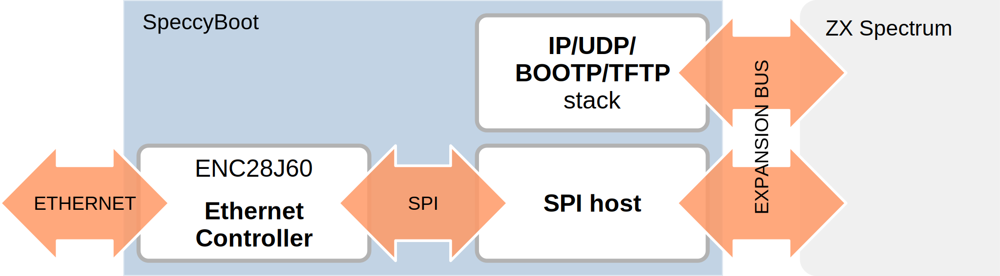

SpeccyBoot is a device for booting a ZX Spectrum over an Ethernet network. Network booting was used for diskless workstation a few years back, and is still often used for configuring and booting VoIP phones. The same procedure can also be useful for booting embedded development boards.
Contents
How network booting works
In general, network booting works as follows:
- The machine boots and uses BOOTP to get an IP address.
- The machine then loads an executable file over TFTP from a server.
SpeccyBoot is a device to do this with a Spectrum. The device connects to the Spectrum's expansion port, and to your local network using standard Ethernet. SpeccyBoot uses standard IP-based protocols, so it works with standard software.
This allows us to load virtually any program onto the Spectrum in a matter of seconds, instead of the tedious and error-prone cassette loading. Programs are packaged as .z80 snapshots, which can be created from any modern Spectrum emulator, or obtained from the World of Spectrum archives.
Network booting with SpeccyBoot
When you switch on a SpeccyBoot-equipped Spectrum, it will do the following:
- If Caps Shift is being pressed when the machine starts, SpeccyBoot is bypassed: the machine will then boot into the regular Spectrum ROM, and not continue with the steps below.
- Otherwise, an IP address is obtained using BOOTP. SpeccyBoot broadcasts a BOOTP request, and expects a BOOTP reply from the BOOTP server.
-
A small binary file,
spboot.bin, is loaded over TFTP. This binary is the stage 2 loader, a part of SpeccyBoot.-
By default,
the machine that responded to BOOTP will be contacted for TFTP too.
If the BOOTP reply (step 1) included a TFTP server address
(field
sname), then that address is used for TFTP instead. The TFTP server address must then be specified as a quad-dotted decimal address, such as192.168.48.103. -
If the BOOTP reply (step 1) included a file name,
(field
file), then that file name will be used instead ofspboot.binfor the stage 2 loader. However, the stage 2 loader depends closely on the SpeccyBoot firmware, and must match the firmware version exactly.
-
By default,
the machine that responded to BOOTP will be contacted for TFTP too.
If the BOOTP reply (step 1) included a TFTP server address
(field
-
The stage 2 loader loads the snapshot list (
snapshots.lst) and presents a menu. When the user selects a snapshot, that snapshot is loaded into the Spectrum and executed. Game on!(The
snapshots.lstfile and the snapshot are both loaded from the TFTP server selected in step 2.)
SpeccyBoot internals
The picture below gives a logical view of SpeccyBoot's internals. The device connects to the Spectrum's expansion bus connector, and uses the MicroChip ENC28J60 Ethernet Controller to connect to Ethernet. The controller is connected to the Spectrum using a simple SPI host. The device also contains an 2kB EEPROM for firmware, with a dedicated stack for the protocols involved.

Hardware/software interface
The SpeccyBoot hardware is controlled by writing to and reading from a single 8-bit control register, located at address 0x9F in the Z80 I/O address space. Data from SpeccyBoot is read back from the same address. The individual bits have different have the following meaning:
| Bit | Meaning when written | Meaning when read |
|---|---|---|
| 0 | SPI SCK: SPI clock signal (strobe). | SPI MISO: SPI data from ENC28J60. |
| 1-2, 4 | Unused: the SpeccyBoot stack will write 0 to these bits. | Unused: ignore |
| 3 | ETH CS: Chip select signal for ENC28J60 (active low). | |
| 5 | EEPROM CS: Chip select signal for EEPROM. When this signal is asserted (low), the ROMCS signal (for the Spectrum's internal ROM) will automatically be deasserted (forced high). | |
| 6 | ETH RESET: Reset signal for the ENC28J60 Ethernet controller (active low). | |
| 7 | SPI MOSI: SPI data to ENC28J60. |
SpeccyBoot firmware
The firmware implements (needed parts of) the following standard IETF network protocols:
| RFC 768 | UDP (User Datagram Protocol) | August 1980 |
| RFC 791 | IP (Internet Protocol) | September 1981 |
| RFC 826 | ARP (Address Resolution Protocol) | November 1982 |
| RFC 906 | Bootstrap Loading using TFTP | June 1984 |
| RFC 951 | BOOTP (Bootstrap Protocol) | September 1985 |
| RFC 1350 | TFTP (Trivial File Transfer Protocol) | July 1992 |
Although these protocols are as old as (in some cases, even older than) the Spectrum, these IP-family protocols are supported by personal computers since the mid 1990s.
SpeccyBoot also includes a bit-banged SPI stack (capable of a transfer bandwidth of about 45kbit/s), a menu selection facility, and support for loading and executing .z80 snapshots.
The code is on GitHub.
Compatibility
I'm using the SpeccyBoot with a Spectrum 128 ("toastrack"). It should work equally well with a 48k machine, and probably with a 16k machine too. Tests with Fuse emulation confirm this.
The later Amstrad Spectrum machines (+2A/+2B/+3) have different expansion connectors, and will not work directly with the SpeccyBoot as described here. I'm sure it's possible to design a slightly modified SpeccyBoot board to connect to one of these machines, but I haven't had the opportunity to do so myself.